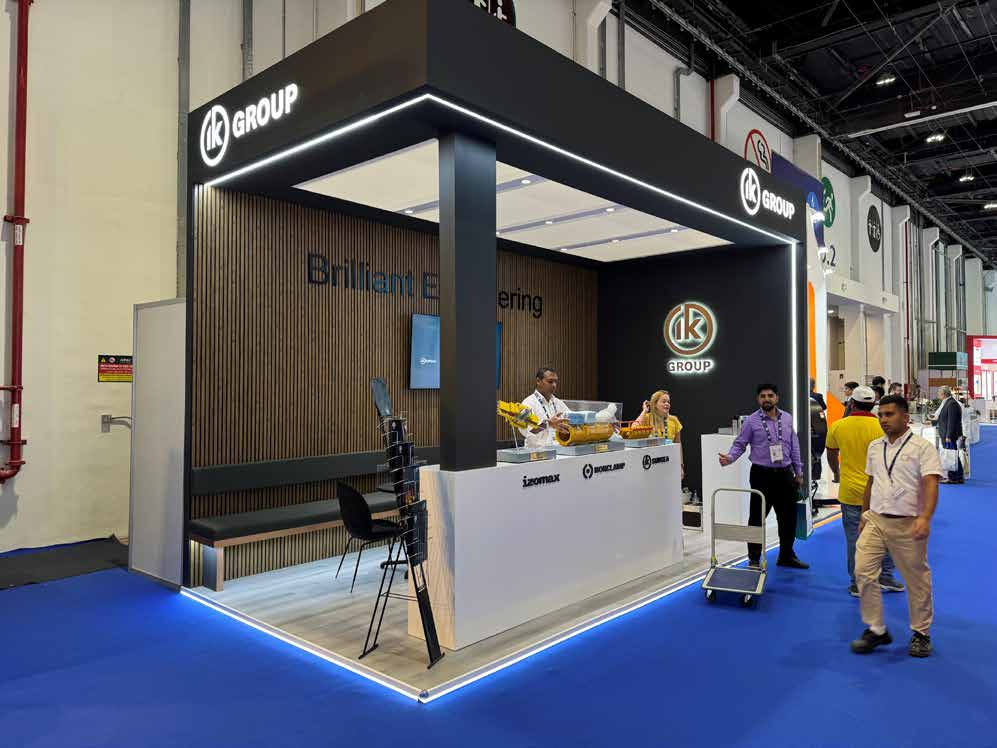

IK Group @ ADIPEC
An 18 sqm stand that proves you do not need a massive footprint to command attention — premium materials and precise space planning delivered maximum impact at the world's largest energy exhibition.
Competing with Oil Majors in 18 Square Meters
ADIPEC — the Abu Dhabi International Petroleum Exhibition and Conference at ADNEC Centre — is one of the most commercially significant energy sector events in the world, with 2,200+ exhibitors across 15 exhibition halls. The floor is dominated by national oil companies (ADNOC, Saudi Aramco, QatarEnergy) and multinational operators (Shell, TotalEnergies, BP) commanding island pavilions of 200-500 sqm with multi-level structures, immersive AV installations, and hospitality suites that rival hotel lounges. In this environment, IK Group's 18 sqm custom build (6.0m x 3.0m, two-side-open configuration in Hall 5) faced an existential credibility challenge: how to be taken seriously by procurement teams who had just walked through a 400 sqm ADNOC pavilion on their way down the aisle.
IK Group, a specialized energy services provider showcasing their comprehensive range of innovative solutions across key business areas, had a focused objective: professional credibility sufficient to earn face-time with major operator procurement teams, effective product display for their equipment range, and a functional space where substantive business conversations could happen without the visitor feeling cramped or rushed. The budget was proportionate to the 18 sqm footprint — approximately 20-25% of what a comparable 60 sqm stand would cost — which demanded extreme discipline in material and layout decisions. Every dirham spent had to earn its place.
ADNEC's hall layout for ADIPEC allocates smaller stands to interior aisles with measurably lower foot traffic — our stand faced a secondary cross-aisle rather than a primary hall thoroughfare. This meant the stand needed to generate its own visual pull from 15+ meters away to attract visitors who might otherwise walk past on their way to the larger installations at the aisle intersections. ADNEC's build regulations for custom stands required fire-rated materials throughout, compliance with maximum build height of 4.0 meters for single-level stands without structural certification, and submission of electrical layout drawings 21 days before build-in. Every design decision needed to serve a functional purpose within the 18 sqm envelope — decorative elements that did not also perform a structural, acoustic, or lighting function were immediately eliminated during the design development phase.
Premium Materials, Precision Layout
Our strategy for the IK Group stand was built on a counterintuitive principle: when you cannot compete on size, compete on quality. While larger exhibitors spread their budgets across hundreds of square meters — often resulting in large but unremarkable stands — we concentrated IK Group's budget into 18 sqm of premium-grade execution. Every surface, every material, every detail was specified at a quality level that matched or exceeded what visitors would encounter at stands ten times the size.
The signature design element was a wood-slat paneling system that covered the stand's rear wall and wrapped around one side panel. We used engineered timber slats with a natural oak finish, precision-milled to a consistent 40mm width with 15mm spacing. Behind the slats, we installed a continuous LED strip system that cast a warm accent glow through the gaps — creating a layered, three-dimensional wall surface that immediately distinguished the stand from the flat-panel construction of neighboring booths. The slat spacing was calculated to produce an optimal light-to-shadow ratio at viewing distances of 2 to 8 meters, ensuring the effect read clearly both up close and from the aisle.
The floor plan was the most space-critical element. At 18 sqm, every centimeter counts. We developed the layout through an iterative process, starting with the functional requirements — product display, meeting surface, storage, brand signage — and testing multiple configurations before settling on an L-shaped arrangement that maximized the usable perimeter while keeping the center open for visitor circulation. The product display shelving was integrated into the slat wall system, using concealed brackets that appeared to float within the timber framework.
The meeting function was addressed with a high standing table positioned along the open edge of the L-shape, oriented to face the primary aisle for maximum visibility. Standing meetings are more efficient in an exhibition context — they encourage concise, productive conversations and allow more meetings per day compared to seated arrangements that tend to extend. The table surface was fabricated from the same solid-surface material used for the product display shelves, creating visual continuity across the stand.
The backlit logo wall occupied the stand's highest point — a tension-fabric lightbox panel mounted above the slat wall, ensuring the IK Group brand was visible from a distance even when the lower portions of the stand were obscured by passing foot traffic. We specified a 3200K warm-white LED array behind the fabric, which produced a soft, even glow that contrasted with the harsh 5000K overhead hall lighting, making the logo panel visually distinctive in the peripheral vision of passersby.
Storage was solved with a discreet cabinet integrated into the base of the slat wall, accessed by a push-to-open door panel that was virtually invisible when closed. This provided storage for literature, personal items, and backup product inventory without consuming any visible floor space. The cabinet's interior was lined and included a power strip for charging devices — a small convenience that made the stand crew's life significantly easier during long exhibition days.
Every Centimeter Engineered for Purpose
Illuminated Wood-Slat Wall
Precision-milled 40mm engineered timber slats with 15mm spacing over continuous LED accent lighting, creating a three-dimensional wall surface with calculated light-to-shadow ratios.
Integrated Product Display
Concealed-bracket shelving floating within the slat wall framework, providing product display surfaces that appear structurally integrated rather than mounted as afterthoughts.
Optimized L-Shape Layout
Iteratively tested floor plan maximizing usable perimeter within 18 sqm while maintaining open center circulation. Standing meeting table oriented toward primary aisle for visibility.
Invisible Storage
Push-to-open cabinet integrated into the slat wall base, providing literature and equipment storage without consuming visible floor space. Lined interior with integrated power strip.
Small Footprint, Premium Perception
The IK Group stand at ADIPEC delivered exactly what it was designed to deliver: professional credibility in an environment dominated by vastly larger exhibitors. The wood-slat wall system proved to be a powerful visual differentiator — multiple visitors commented that the stand felt more like a high-end retail environment than a typical exhibition booth, which was precisely the perception IK Group needed to establish with procurement teams from major operators.
The standing meeting table maintained a steady flow of business conversations throughout the event. IK Group's team reported averaging 15 to 20 substantive meetings per day — a high number for an 18 sqm stand at ADIPEC, where many visitors are on tight schedules and selective about which stands they stop at. The aisle-facing orientation of the meeting position was cited as a key factor: visitors could see that the stand was active and welcoming, which reduced the psychological barrier to approaching a smaller exhibitor.
The integrated storage solution proved its value during the four-day event. Having literature, samples, and personal items accessible but invisible meant the stand maintained its clean, premium appearance from opening to close each day — a discipline that many larger exhibitors struggle with as their stands accumulate clutter over the course of a multi-day event.
This project became a proof point for our compact stand philosophy: that budget constraints are design constraints, and design constraints produce better outcomes than unlimited space ever does. The IK Group stand cost a fraction of what their larger neighbors invested, but it delivered a per-square-meter impact that exceeded anything in its immediate vicinity. It proved that 18 sqm, when every centimeter is engineered with intention, is more than enough to build a credible, commercially productive exhibition presence at the highest level of the energy industry.
Ready to Build Your
Exhibition Presence?
Whether it is 18 sqm or 700 sqm, we engineer every project for maximum impact.